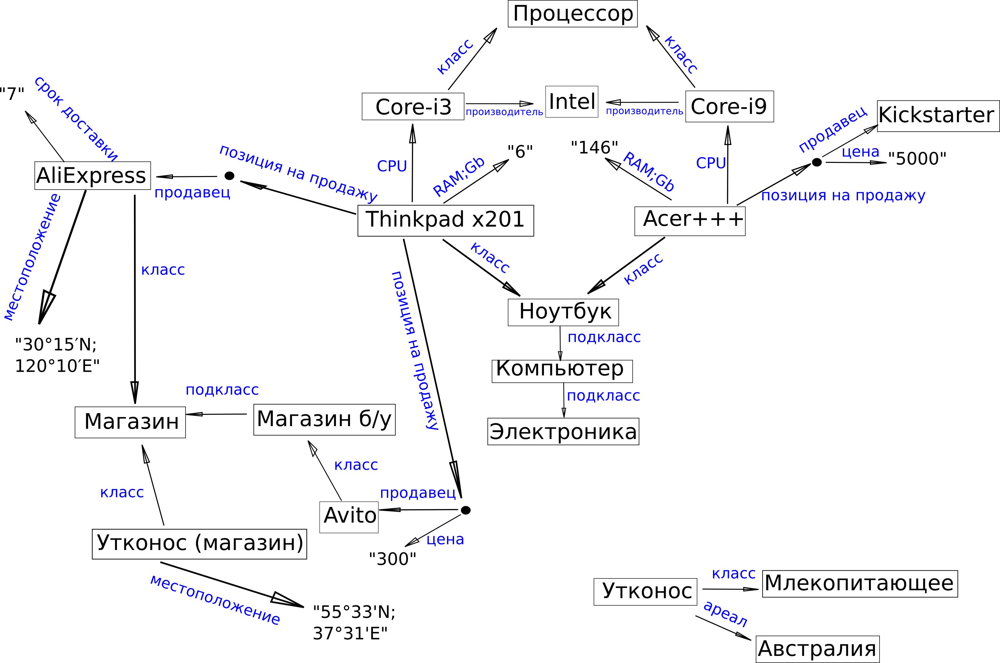

Семантическая сеть и семантическая паутина
Cемантическая сеть - это граф, в котором вершинами являются объекты или понятия предметной области, а (ориентированные) ребра описывают отношения между ними.
Семантическая сеть и семантическая паутина
Семантическая паутина - это семантическая сеть, построенная на основе веба за счёт стандартизации разметки на сайтах.
Linked data (связанные данные) - то же самое.
Пример семантической сети

Как работает семантика: объекты
Наша сеть не знает, что такое ноутбук, но она уже знает, как он связан с другими объектами.
- ноутбуков бывает по-крайней мере 2 разных
- ноутбуки характеризует какой-то процессор и какая-то оперативная память
- ноутбуки являются подвидом компьютеров
Как работает семантика: свойства
Сеть не знает, что означает "CPU" у ноутбука, но мы наложим ограничения:
- Если у субъекта есть CPU, то он является "Компьютером" (имеет такой класс)
- Если про объект сказано, что он чей-то CPU, то он обязан относиться к классу "Процессор"
Как работает семантика: свойства
Сеть не знает, что такое классы и подклассы, но мы введём правила, такие, что если
- Acer+++ имеет класс ноутбук
- ноутбук - это подкласс компьютеров
- → то Acer+++ имеет и класс компьютер тоже
RDF(S) - RDF Schema
Стандартные термины RDF позволяют описывать типы объектов (rdf:type).
Но иногда хочется описать отношения между типами и свойствами - для этого нам нужен специальный словарь терминов RDFS.
comp:notebook rdfs:subClassOf comp:computer .
comp:cpu rdfs:domain comp:computer ;
rdfs:range comp:cpu .
comp:ram rdfs:range xsd:decimal .
Реификация
Иногда утверждение является не фактом, а гипотезой или цитатой. Мы можем отразить и такие случаи:
:Мюллер :думает _:statement.
_:statement rdf:type rdf:Statement;
rdf:subject :Штирлиц;
rdf:predicate :имеетГражданство;
rdf:object :Третий Рейх.
Логический вывод
Из утверждений
:Socrates rdf:type :Human.
:Human rdfs:subClassOf :Mortal.
автоматически получается, что:
:Socrates rdf:type :Mortal.
Онтологии - OWL
OWL - ещё более мощный словарь. Он позволяет описывать множество логических правил.
Пример: "ребёнок ребёнка - это внук":
:hasGrandchild owl:propertyChainAxiom ( :hasChild :hasChild ).